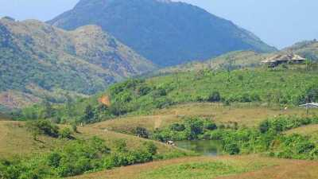
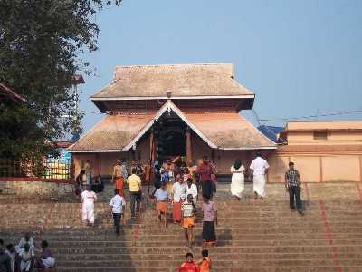

A fascinating cave carved out of rock surface is Kottathavalam lying on the top of a Murugan Hills at Kurisumala. The cave is considered to be the resting place for Madura Royal family.

After all the blessings from temples, it is time for some adventure. Nadukani is one such place nestled amid the wilderness of nature and densely wooded hills offering its visitors a beautiful trail for trekking.

A popular Hindu shrine and great epitome of Kerala style of architecture, Thirunakkara Mahadev Temple is dedicated to Lord Shiva. The temple was established in 16th century by the king of Thekkumkur.